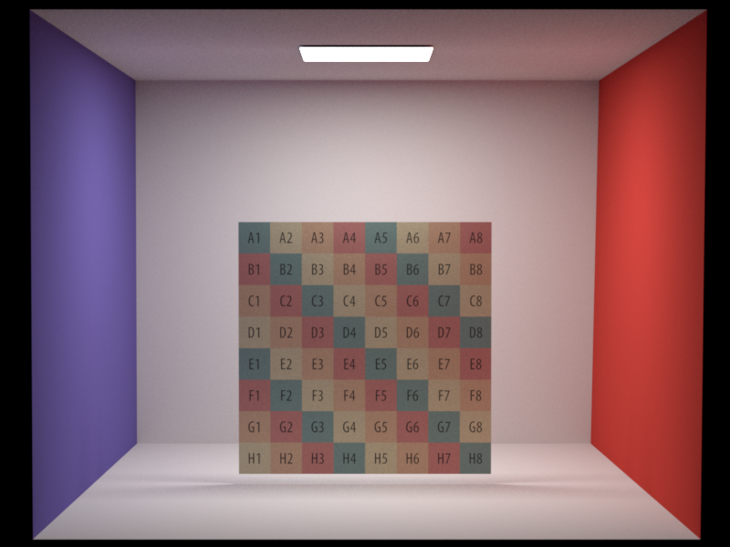

**Final Project Report**
Student name: Virginie Piskin
Sciper number: 300542
Final render
============
This image was rendered in 34m with the stratified sampling with 2048 samples/pixels and a maximum number of 4 dimensions.
You can find the resulting image in result/project/final_scene/4_final.png.
The cloth is rendered with a texture and a normal map and the light bulbs are area lights.
Since the rendering competition I added the three lamps in the scene, you can find the old submission in result/project/final_scene/3_final_savings.png.
This image was rendered with the independent sampling with 2048 samples/pixels.
Motivation
==========
The theme Unwanted Presents gave me the idea to render a scene which would display
some enchanted or cursed objects. I like the idea that the objects seem deceivingly valuable at first
but are really harmful for the owner. This is why I decided to create a scene around the Deathly Hallows
(the elder wand, the resurrection stone and the invisibility cloak) from Harry Potter.
The deathly hallows are three objects from Harry Potter which are introduced in the story through
"The Tale of the Three Brothers".
The elder wand is said to be unbeatable in combat, the resurrection stone is said to recall the dead and the invisibility cloak turns its
wearer invisible (see pictures from the movie below).
Feature list
============
I initially wanted to implemented the depth of field feature but I unfortunately didn't have time for that.
Even if I fully implemented the Cloth Rendering feature, I wasn't able to fully debug in time. Therefore I decided
to spend time implementing Stratified Sampling instead which is why I deduced 10 points from the Cloth Rendering feature.
Feature
Standard point count
Adjusted point count
Textures
10
10
Normal Mapping
10
10
Mesh Design / Physical Simulation
10
10
Extra Emitters: Point Light
10
10
Cloth Rendering
30
20
Stratfied Sampling
20
20
Total
90
80
Note
====
Since the path_mis integrator didn't work correctly when I submited Homework 5,
I have tried to fix the implementation after the deadline in order to have it working
for the project and I was able to fix most of the issues I encountered. The images rendered
with the path_mis integrator now look really good but they
still don't pass the test by a very low value. Therefore, I thought it was best to use
the path_ems integrator to render the images for the feature validation
I also have deactivated all the tests related to the path_mis integrator as it made Travis fail building the project.
Feature 1: Textures
===================
1. Description
As texture mapping is primordial to render most objects in a scene this was the first feature I implemented.
To get a better understanding of the task I referred to PBRT Chapter 10 - Texture
(p597-609) which explains not only the 2D (u,v) mapping techniques but also sampling and antialiasing methods
to get a better looking texture mapping. In the Nori environment, each intersection point computed by the
rendering algorithm posesses corresponding (u,v) coordinates that maps the point in 3D space to the $ (u,v) \in [0,1]^2 $
coordinates in 2D texture image. Therefore, the mapping in terms of texels is straight forward, we only need to
multiply the (u,v) coordinates with the size of the image to get the texels coordinates.
$$ tx = u * width $$
$$ ty = v * height $$
2. Design choices
To integrate texture mapping in Nori I created a specific Texture class as it is done in PBRT.
This class is in charge of reading the texture image and accessing specific texels given uv texture coordinates.
The implementation of the member functions mainely uses the stbi_image library and specifically the
stbi_load() function to read images with a given path in the filesystem. There were two tricky parts in
this implementation:
2.1. Use of the Path Resolver
I needed to call the path resolver to get the right absolute path for Nori to understand
the right location of the files.
2.2. Storage
The stbi_load() function reads the image by concatenating pixel values in an array, therefore I had to
find out how to access the elements the right way. This function goes through the image row by row and appends each
R, G, and B value of each pixel in one cell. For instance, the first 3 values of the array correspond to the RGB values
of the first pixel in the first row. Therefore, to access a pixel at a certain (u,v) coordinate, I first convert them into
texel coordinates as explained above with the following convention:
$$ u=Intersection::uv[0]$$
$$ v=Intersection::uv[1] $$
Then I used the following formula to access the position of the texel in the storage array:
$$ position = nb_{channels} * (ty * height + tx) $$
The number of channels indicates the number of components for each pixel, by default this value is set to 3 (RGB)
but it can be different depending on the image (for instance we can also have information about the opacity
which would give 4 channels RGBA).
3. Validation
To test and understand how uv mapping works I followed a Youtube Tutorial
which explains how to generate uv coordinates from an object in Blender. This tutorial also allowed me to test my implementation
with a cube object and a handmade texture image. However, throughout my validation tests I noticed strange behaviors when applying
the textures on the objects. Depending on the object, the image, the uv convention used and the way the object was exported from Nori
the texture applied differently. I wasn't able to find a combination that would satisfy all the objects at the same time. I kept
the conventions described above because it worked perfectly with the wand, the most important object in my scene. Moreover the other
object in the scene use textures which are symetric and therefore the orientation of the images doesn't matter so much. Finally, in
some cases just rotating the image manually is enough to obtain the desired result.
3.1. Cube test: integrator = path_ems - samples = 512
With this test we can see that the image doesn't get applied properly as it would be on Blender for instance. The face on the left
side of the cube is gray instead of being either blue or yellow depending on the way the object was exported.
3.2 Pattern test: integrator = path_ems - samples = 512
For this test I noticed that the image was somehow tilted when applied to the plane.
I had to do change two things in the implementation to fix the problem:
- Add this line before loading the image: stbi_set_flip_vertically_on_load(true)
- Exchange u and v coordinates

3.3 Wand test: integrator = path_ems - samples = 512
Even if the last two tests weren't satisfactory, the wand's texture is correctly applied with this implementation. We can see that
it is the case by comparing the image with the 3D model's website presentation.
Feature 2: Normal Map
======================
1. Description
Similarly to texture mapping implementing a normal map was primordial for the scene. Combined with the texture images the normal mapping
adds a lot of realism to the scene by introducing a sense of depth in the image. At first, I was really confused with the different methods
(Bump Map, Normal Map, Displacement Map) it took me a lot of online reading to get a proper understanding of the implementation. I referred
to PBRT Chapter 9.3 - Bump Mapping (p584-590) and a very helpful
Youtube Video.
There are two step to implement normal mapping :
1.1. The computation of the tangents for each triangle of the mesh $dp/du$ and $dp/dv$. For this part I found two very similar implementation sources:
the first one comes from this website and another one
is the implementation of tangent computation from the Mitsuba Renderer
(specifically the TriMesh::getNormalDerivative() function).
1.2. The computation of the shading frame at each intersection point using the triangle tangent derivatives. For this part I used the information I found
on Wikipedia which details the encoding of Normal Map images.
2. Design choices
2.1. The computation of the tangents
In order to compute and store the tangents derivatives I implemented a function computeTangents() in the Mesh class which essentially goes through
all the triangles of the mesh. For each triangle, the function solves a linear system of 2 equations and 2 unknowns to get the tangent derivatives (see resources
cited above) and store them in two attribute matrices of the Mesh class. These matrices contain either $dp/du$ or $dp/dv$ 3D vector coordinates columwise for each
triangle identified with its face index.
2.2. The computation of the shading frame
Similarly to the Texture class I created a new class NormalMap to read the pixel information from the normal map image. The main difference with the
Texture class is that the NormalMap class contains a function getShFrame() which builds a new shading frame for an intersection point. For this
we need to know to which triangle the intersection point belongs to. Therefore, I modified the Mesh::rayIntersect() function to store the face index of
each intersection which is necessary to get the two tangent derivatives. The function also decodes the pixel information from the normal map image: each channel
contains a value encoded in $ [0,255] $ which need to be converted to $ [-1,1] $ (as decribed in the resources cited above). Each channel is used in a weighted
sum of geo frame normal and the two tangents to compute the shading normal. Then the shading frame is basically built out of the shading normal and the two tangent
derivatives.
3. Validation
3.1 Plane test: integrator = path_ems - samples = 512
This test is very simple, I only used a plane and a normal map image (sed in Wikipedia's page for normal mapping) which helped me a lot to debug my implementation.
As we know how each bump should look like it is easy to detect when the implementation is wrong. For instance if the bumps are in fact hollow this means that
the normals are oriented in the opposite direction.
3.2 Tiles test: integrator = path_ems - samples = 512
Testing normal maps with tiles is also a good idea to be able to look at both the texture and normal map combined.
Here we can see that the tile borders are darker than the tiles surfaces as there are cavities.
3.3 Wand test: integrator = path_ems - samples = 512
With the wand we can see that the normal map make small cavities in the right places. As before, we can see that
it is the case by comparing the image with the 3D model's website presentation.
Feature 3: Mesh Design / Physical Simulation
=============================================
1. Description
As part of my scene I had in mind to render the invisibility cloak which required to create my own custom mesh using Blender's physical simulation
of a piece of cloth so that it sat and fell nicely on top on the table. For this I used both a Youtube Tutorial to
model a cape and another one
modelling a cloth in a bowl which were both very useful
to make my own mesh combining the different techniques until I was satisfied with the result.
2. Method
I created a plane which I subdivided as much as I need, then I placed the plane on top of the table. I selected the center vertices (1) and used weight
painting mode (2) to give weight to these vertices. I saved this group of vertex named "Cloth" to be used in the next steps.
I added 3 modifiers to the cloth (4): cloth, solifify and subdivision surface. I also added a collision modifier to the table. Then, I selected cotton presests
for the cloth simulation and I used the group "Cloth" to pin the object. To model the cloth I wanted it to look like it was standing on a mini coat holder and
instead of using an object with collision properties (which I also tried but I wasn't satisfied with), I just used pinning to hold the cloth up.
Finally, I made sure that the collison and the self collision was enabled.
I ran simulations of the cloth (videos can be found in mesh_validation\blender_videos) and selected a point where the mesh looked nice. Before setting the mesh into place,
I played with the thickness, mass, spring and air settings to get a smoother fall. To keep the mesh I applied the cloth modifier, the solidy modifier and the subdivision modifier.
This simulation was made for the purpose of the report, I used another mesh for my final scene that I created the same way but for which I unfortunately didn't keep screenshots
of the simulation. I also noticed here that when exporting the meshes from blender it is best to use the option Z forward for it to be compatible with Nori. However, I didn't
notice this in time for the rendering of my final scene.
3. Results
3.1. Cloth Simulation set up
Feature 4: Extra Emitters: Point Light
=======================================
1. Description
To implement the point light I fully relied on the explanation given by PBRT Chapter 12.3 - Point Light (p714-721).
The implementation is straight forward, a point light emits the same amount of light in all directions contrary to the area light which requires hemisphere sampling. The emited light is computed the light
intensity divided by the distance between the light and the point being rendered. The only tricky part to implement a point light is that the point lights are positionned in light space which means that
a correct transformation is required to replace the light in world space.
2. Design choices
Similarly to the AreaLight class, I created a class PointLight which inherits from the virtual class Emitter.
This class posseses 4 attributes: the intensity, the position, the light position and the light to world transform. The idea was to get the position from the xml file which would allow to create a position
translation transform. I added a translate function in the transform class (I looked both the Mitsuba and
PBRT implementations for this) so that I could set light to world transform with the given position.
Then to find the light position I apply this transform to a point placed at (0,0,0). However, I think I didn't understand this part correctly: I don't see the difference between using directly the position given
in the xml file and translating a point with the light to world transform. As this is still unclear for me, I wasn't able to make the implementation work properly. It looks like that if I use the position directly
as the position of the light I can make the point light move in the scene.
3. Validation
3.1. Position test: integrator = path_ems - samples = 512
We can see that weather the given position is at [0.5,0.5,0.5] or [0.0,0.0,0.0], the light comes from the same place for the implementation with the world to light transform.
We can also note that using the exr I was able to play with the intensity of the light which behaved in reasonable way, expanding gradually in a sphere shape.
However, it would be hard to tell if the emitted amount of light is correct.
3.2. Position test without transform: integrator = path_ems - samples = 512
With this test we can see that using the position information directly to set the light position makes it possible to move the point light in space.
I'm unsure if this is the right way of implementating this feature as it was explained differently in PBRT.
3.1. Multiple emitters : integrator = path_ems - samples = 512
With this test I wanted to see what happened if I had two emiters but also two different types of emitters.
Here it looks decent but with increasing radiance and intensity the image gets quickly noisy.
Feature 5: Cloth Rendering
==========================
1. Description
The most challenging feature to implement was Cloth Rendering. The method and the implementation I used is exclusively based on a research paper presented at SIGGRAPH in 2013 entitled
A practical microcylinder apparance model for cloth rendering (Iman Sadeghi, Oleg Bisker, Joachim De Deken, Henrik Wann Jensen, UC San Diego).
This paper is very well structured and easy to read but when it comes to actually implementing the method to integrate it to Nori many questions rise. The idea in this paper is to think of piece of cloth as being made
from multiple threads in orthogonal directions defined by tangent derivatives du and dv. Each of these threads are considered as being small cylinders on which the intersecting rays behave according to the a custom made BSDF.
The definition of the BSDF in this paper allows to avoid the implementation of subsurface scattering. The thread scattering function $f_s$ is subdivided into two functions: surface reflection $f_{r,s}$ and volume scattering $f_{r,v}$.
Both functions use incident angles in a spherical coordinate system defined by a local frame created by the normal at the intersection, the tangent (du or dv) and their cross product. We sample an outgoing direction
in an Uniform hemisphere and we project both the incident direction and the outgoing direction in the local frame to find angle values. By computing $fs$ for each thread direction we can get the radiance in each direction Lr,1 and Lr,2.
For each Lr,j we also need to compute the thread scattering value for multiple tangent orientation by rotating the local frame with given sets of angles. Finally, the total radiance Lr combines both directions as a weighted
some of the independant radiances. Once the radiance is computed, it must be altered by a shadowing function which takes into account the shadows created by the overlapping patterns of the threads. As this process may alter the color at unwanted places,
another step is called reweighting which takes into account the viewing angle to re-color some areas. To compute the reweighting function we need another set of angles using a local frame created by another combination of the normal, the tangents
(du or dv) and their cross product.
Essentially, most of what this method is based on computing angles and projecting vectors. Hence, in theory it isn't too complicated and rather intuitive once we understand the method properly. Moreover, all the parameters to
achieve different types of cloth are given in the paper, which is very motivating. This means that we hardcode all of the parameters and require very little input from the user. However, to implement such a method in practice
we need multiple functions embricated to keep the code clean as the operations are very redundant. This also means that debuging is very tricky and tedious: I implemented all the method but I didn't have enough time to spend on debugging.
I had in mind to measure the outgoing angles and make plots out of the measurements to compare with the bsdf plots shown in the paper.
2. Design choices
This bsdf is somwhat similar to the Microfacet bsdf I used it for inspiration to start and I created a microcylinder class.
This class reads a string parameter from the xml file which indicates the type of cloth to be rendered for instance "Linen Plain" was hard coded in the class as attribute values.
This class has many functions:
- projection(): Projects a vector on 3 basis directions.
- surfaceReflection(): Computes the surface reflection scattering functions fr,s.
- volumeScattering(): Computes the volume reflection scatering functions fr,v.
- threadScattering(): Calls the Fresnel() function to get the reflectance. Uses the surfaceReflection() and the volumeReflection() functions to compute the thread scattering function fs.
- masking(): Computes the masking value M for specific ingoing and outgoing angles.
- reweighting(): Computes the reweighting value P for specific ingoing and outgoing angles.
- outgoingRadiance(): Uses the projection() function to compute all the necessary angles in the right base and calls the threadScattering() function with the right parameters. This function also uses the masking() and reweighting() functions to combine it with the threadScattering() output.
- rotateVector(): Rotate a vector by multiplying it with a rotation matrix defined with specific angles given as parameters. Eventually, I realised I could have used the Transform class to implement this function.
- eval(): Loops over the sets of tangent orientations for each du and dv direction. Calls the outgoingRadiance() function to compute the radiance and sums the values for each tangent directions. This function finally combines the randiance contribution of each direction to return the thread scattering value fs.
- pdf(): Computes the pdf relative to the sampling. Here we are only using hemisphere sampling, therefore it calls the hemisphere sampling's pdf() function.
- sample(): Samples the outgoing direction at each intersection point and calls the eval() and pdf() functions to return the overall outgoing radiance.
3. Validation
Feature 6: Stratfied Sampling
=============================
1. Description
As I intially wanted to implement the depth of field feature, I eventually decided to try to implement stratified sampling in Nori, motivated by the fact that this feature would easily give a better looking image.
To implement this feature, referred to the class notes (similar to the slides on "Popular Sampling Patterns"
provided by Wojciech Jarosz that were very useful) and the explanation given by PBRT Chapter 7.3 - Stratified Sampling
(p432-441). The theory of stratification is very intuitive, instead of randomely sampling position for each pixel we can control the sampling by constraining the samples to be distributed on a grid. The idea is to subdivide the
sampling domain into non overlaping regions (strata) and randomely choosing a sample from each of these regions. This can either be choosing the point in the middle of the strata or using a random value to offset the point in the
strata, which eventually gives better results. In terms of implementation, it isn't as straight forward to translate the theory into code, especially to integrate it to Nori. Therefore, I used
Mitsuba's implementation as a base to understand how to implement Stratfied Sampling, without which I wouldn't
have been able to implement the feature.
2. Design choices
Similarly to the Independent class, I created a Stratified class to implement stratified sampling.
This class has two attributes given by the xml file: the number of sample per pixel requested and the number of dimensions. Here we force the number of pixel to be a square root of the resolution (same resolution in
both directions), therefore is the given number isn't a perfect square we round the number of samples to the next square (for instance if we request 512 samples/pixel it will be rounded to 529 samples/pixel <->
resolution = 23). The number of dimensions is the number of time we will request a random number per pixel and per sample.
This class has also two important two 2D tables as attributes, which stores numbers to be used during the request for a random number. The height of the tables is the number of dimensions and the width is the number
of samples per pixels. There are two functions handeling the tables: generate() and advance(). For each pixel in the image new numbers are generated, the generate function loops over the tables and store the index of
the column and for each row the indices are shuffled. In the Nori implementation, this function needs to be called in the main.cpp inside the function renderBlock() inside the two for loops over the
coordinates x and y of the block. The function advance() is called each time a sample per pixel is treated, it increments a column index indicator each time a number is read in a row until they are all used (which is
at the end of the table).
The last two functions of this class are next1D() and next2D() which similarly to the Independent returns either a random float or a pair of random float. These functions read the values of the table each time
they are called by using index indicators for the rows and the columns. Instead of simply return a uniformely distributed random number provided by the random number generator, it also uses the information inside the
table to re-compute a random value for each strata. For instance for the next2D() function we have:
$$ x = (value \% resolution + random) / resolution $$
$$ y = (value / resolution + random) / resolution $$
This procedure is only limited by storage, when all the rows have been read, the functions simply return a random_float similarly to the independant sampling method to avoid storage issues.
Theoretically, these numbers are necessarely inferior to 1 as the random number generator provides numbers in $ [0,1[ $. However, I came accross a sneaky segmentation fault which was triggered by a random sample equal 1.
When the integrator was doing the emitter sampling, the sample used being at 1 it was requesting a non existant cell in the emitter list. This error wasn't easy to debug as I wasn't suspecting the random number to be at
1 and I still don't understand how this was the case.
3. Validation
3.1. Checkboard test: integrator = path_ems - samples = 256
As I didn't implement the Depth of Field feature it is particularly hard to see if the implementation of stratified sampling is correct.
However, here we can see a difference, especially on the white squares of the checkboard which looks more noisy for the independant sampling than for the stratified sampling.
Zooming in, we can also see that the shadow of the plane on the floor is smoother for the stratified sampling.
3.2. Checkboard test: integrator = path_ems - samples = 512
Here the difference is slightly less visible.
3.3. Final scene : integrator = path_ems - samples = 512
With my final scene I don't necessarely see much difference other than the noise being distributed differently.
Feedback
========
This course was very interesting, I really feel like I learned a lot throughout the course and I am glad I kept working for it until the end.
However, in general I think this class requires a lot of work, more than a regular 6 credits class.


![Point light (position = [0.5,0.5,0.5] intensity = [5.0,5.0,5.0])](point_validation/3_point_validation.png)